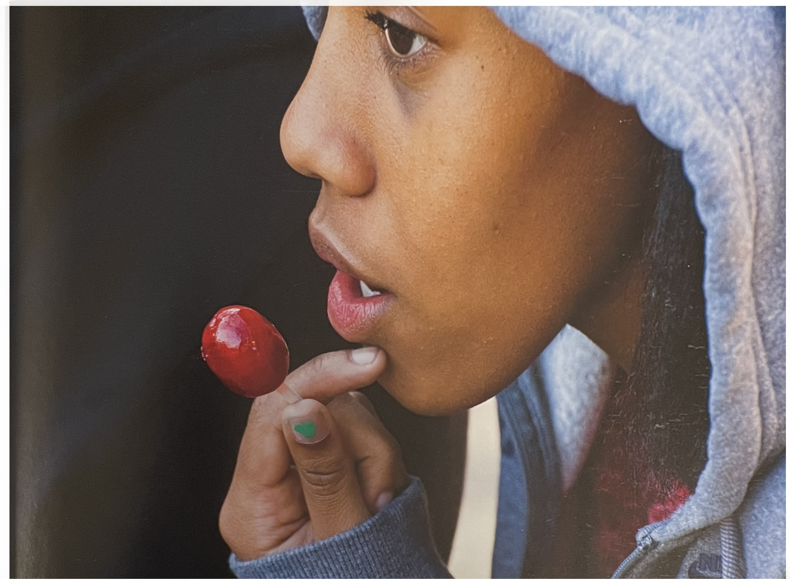
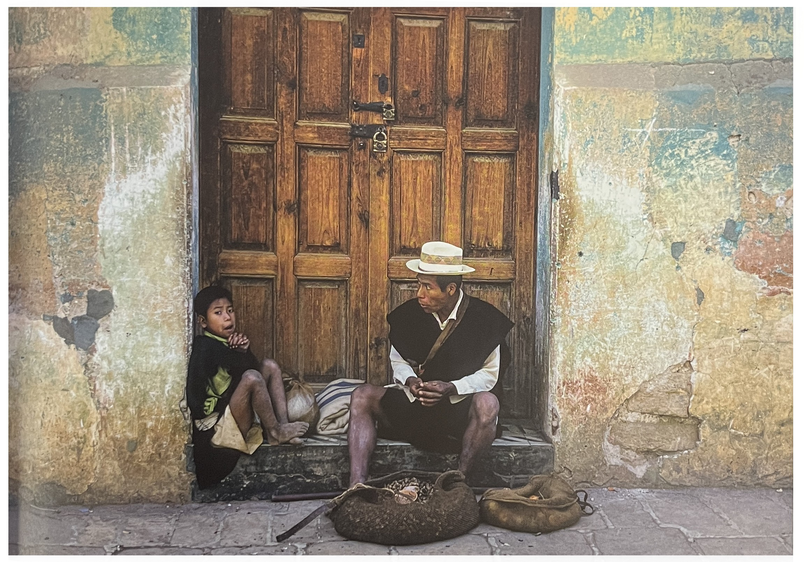
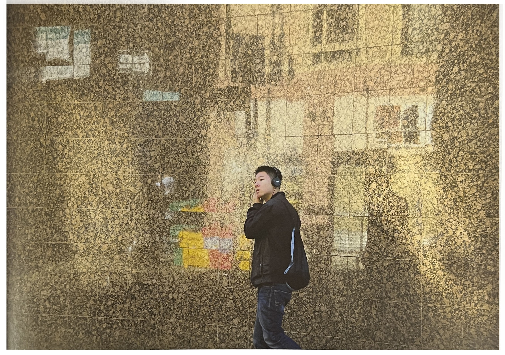
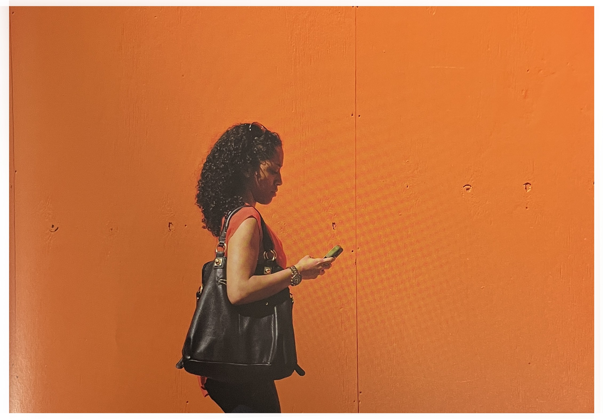
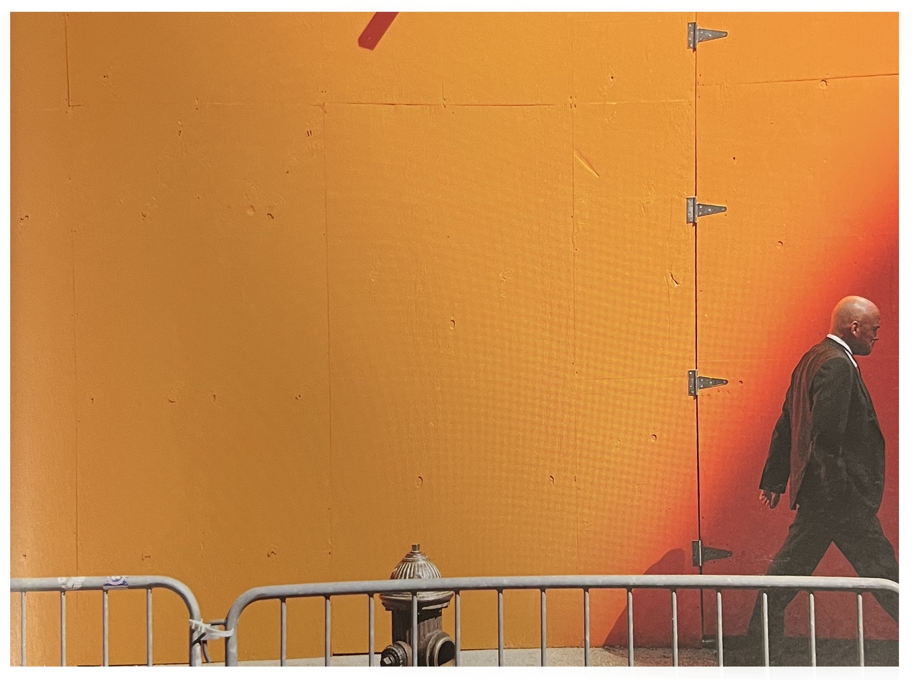

이 사진에 대해 쓰려고 앉자마자 먼저 '빨간 막대사탕을 손에 쥔, 초록새, 회청색 후드를 입은 소녀'라고 썼다. 나는 분명 이사진을 찍을 때 빛이나 제스처 보다는 색을 염두에 두었을 것이다. 그것이 나의 고질적인 문제를 해결해 주었다. 당신은 이미 눈치챘겠지만 어떤 사진이 어떤 카테고리에 들어길지 정하는 것은 지극히 주관적이다.
나는 저 빛이 좋다.
그리고 나는 그 소녀의 제스처, 피부의 손가락, 후드와 그림자, 손을 들고 있는 모양과 약간 벌어진 입까지 모든 것이 멋지게 보였다. 하지만 이날의 주인공은 색이었다.
나는 사진을 찍고 잠시 동안 아주 희미한 강박장애와 함께 빛, 제스처, 색 중 대체 어떤 카테고리에 이사진을 넣을 것인가를 생각하면서 잠시 멈춰 있었다.
이상한 것은 당신이 하나를 얻고 나면 대체로 둘을 얻게 된다. 그리고 만약 행운이 따른다면 셋을 전부 얻게 되기도 한다. 나의 경우는 셋을 전부 얻은 적이 많지 않다.
빨간 마대사탕, 초록색 손톱, 그리고 회청색 후드를 입은 소녀
계속 함께 살아온 색들[1]이 사진은 고테말라와 국경을 접하고 있는 멕시코의 아름다운 도시 산 크리스토발 데 라스 카사스에서 찍은 것이다. 아버지와 아들의 인내의 제스처가 내게는 한쪽에서 다른쪽으로 색의 메아리가 치는 것처럼 보였다.
원래 빨간색과 초록색이었던 벽은 오랜 시간 동안 태양과 비, 더위와 추위에 시달려 그 색이 바랬다.
빨간색은 그다지 빨갛지가 않았고, 초록색도 별로 초록빛이 나지 않았다. 색은 오랜 시간을 함께 하면서 함께 지내는 법을 배우게 된다.
그들은 원래의 강렬함을 잃었지만 서로 더 미묘한 방식으로 어울리며 상호작용한다.
아빠와 아이, 멕시코
엉덩이를 가볍게![1]나는 종종 전에 찍었던 것을 다시 찍곤 한다. 그런데 어떨 때는 우연히 그들을 다시 마주쳐서 찍는 경우도 있다. 나는 일주일짜리 수업의 첫날인 월요일 점심식사 후에 수강생들을 밖으로 보내고 항상 집까지 혼자 걸어간다. 나는 항상 가장 빠른 길로 집까지 걸어가고 항상 이 벽을 지나고, 그리고 항상 옆에 서서, 옆으로 길게 따라서(그 반영이 더 도드라지도록)사진을 찍는다.
내가 앞의 문장에서 '항상'이라는 말을 좀 많이 썼다는 걸 느꼈지만, 그날은 내가 그 벽에 다다랐을 때 문득 어쩌면 다른 위치에서 바라보는 것도 좋을 것 같다는 생각이 들었다.
그래서 나는 길을 건너갔고, 정면으로 그 벽을 바라보며 사진을 찍었더니 아주 단순한 반영(덜 분명한)이 보였다. 그러나 덕분에 이전에는 쉽지 않았던 인물을 사진 속에 포함시킬 수 있었다.
실패에서만 배우는게 아니다. 성공에서도 역시 찾아내야 한다. 과거의 성공을 잘 보내주지 않으면 새로운 것을 보지 못할 수도 있다.
화강암 벽, 중국 소년
배우들이 등장할 것이다[1]나는 되도록 사진을 계획하지 않는 편이다. 그렇지만 아주 가끔 어떤 것은 머릿속에 각인시켜 두었다가 돌아가서 찍고 싶을 때가 있다.
나는 공사장 밖에 세워져 있는 이 멋진 오렌지색 가벽을 발견했다. 나는 게속 그곳으로 사진을 찍으러 가려고 하는데, 한두 가지가 자꾸 내앞은 막아섰다.
마음 한구석에 멋진 프랑스 사진작가 로베르 두아노Robert Doisneau의 말을 품고, 나느 마침내 그곳으로 갔다. "나는 무대를 찾았으나 배우들이 곧 등장할 것이다."
오렌지색 벽은 나의 무대였다. 그리고 나는 꽤 자주 그곳에서 사진을 찍었다. 아마 수백 장은 될 것이다. 휴대폰을 보며 걷는 아름다운 여자는 나를 의식하지 못하고 있었고 그건 또하나의 축복이었다.
여자와 오렌지색 벽
그 다음 날[1]내가 벽을 촬영하고 있을 때, 빛이 바뀌고 그림자가 드리웠다. 나는 사진의 오른쪽에서 그림자를 향해 걷고 있는 이 남자를 봤다.
나는 이 사진이 더 복잡해질 것이라고 예상했는데, 그 이유는 햇살이 비추는 곳은 조금 더 밝은 오렌지색으로, 그림자가 진 곳은 조금 더 어두운 오렌지색으로 바뀌었기 때문만은 아니었다.
그와 더불어 소화전, 경찰이 쳐놓은 바리케아드, 문 이음새의 경첩마저도 사진을 더 초현실적으로 만들어 주었다.
그 다음 날 이 가벽은 철거되었다.
오렌지색 벽2
[참고문헌]
[1]빛, 제스처, 그리고 색light, gesture & color, 제이 마이젤 지음, 박윤혜 옮김, 시그마북스, 2015.3.2
....
....
....
....
....